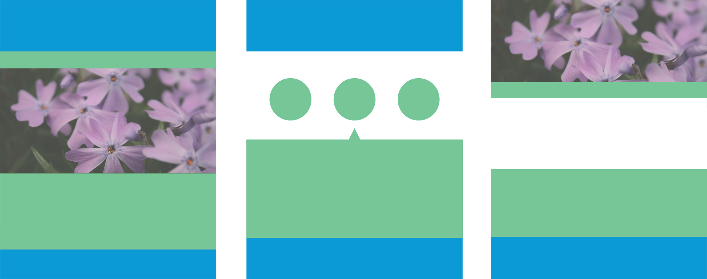
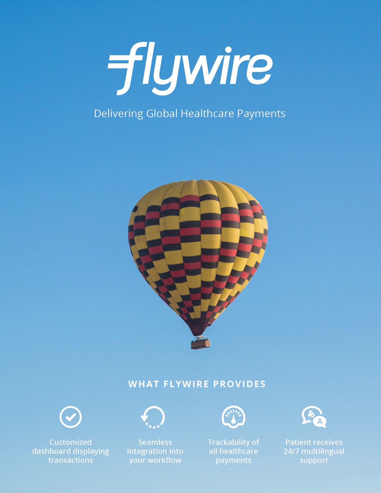
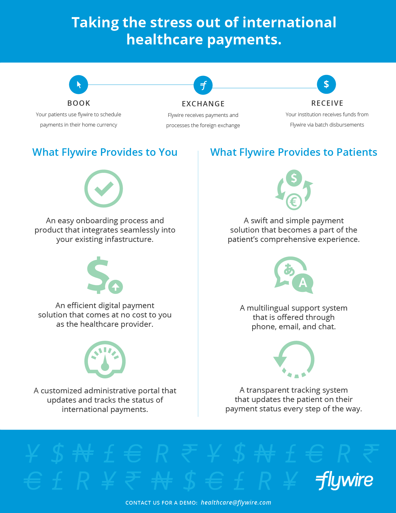

INTRODUCTION
For our partner project at Startup Institute, Will, Jamie, and I were tasked to create new marketing materials for Flywire's new healthcare division. Flywire has already been established as an international payment solution for higher education and was looking to break into the US inbound healthcare space.
The Flywire Team tasked us with developing the brand for their new healthcare division, starting off with a two-page flyer describing the benefits of their system to healthcare providers. Jamie and Will worked on the language and copy while I worked on the visuals using InDesign.
IMAGERY

By far the most difficult part of the redesign of the healthcare flyer was finding the right stock photos to use for the flyer. Healthcare marketing has not changed very much over the years and the design trends have been pretty much the same:
- Navy and Baby Blue color schemes (sometimes with yellow as an accent color!)
- Photos of smiling doctors or patients
- Landscape shots of hospital buildings
The design and marketing teams were having trouble looking for imagery that would be refreshing but not too off-beat. After much trial and error, our team decided that having a theme of the patients "journey" would be best for the imagery, based on the messaging used in previous marketing collateral and the positive feedback we received from the Flywire team on our designs that featured a hot air balloon.
ITERATIONS
Initial layout sketches for the flyers before we were presented with the collateral that had already existed.
Redesign of the healthcare finance sheet that is shared with finance departments of hospitals.
Redesign of the front page of the healthcare collateral that is shared with international patient departments. We agreed that having a minimalist layout in the front was the best way to grab someone's attention and decided to go that route for our final rounds of design.
Redesign of the back page of the flyer above. This section is loaded with more information about the benefits of using Flywire and how the wiring process works. At this stage I've learned to embrace whitespace a little bit more with my designs.
THE END PRODUCT
 Summary of Design Conclusions:
- Choose imagery that invokes a sense of the "patients journey" to keep the brand fresh
- Imagery should be not be dark, and should stay away from colors which do not complement Flywire's blue
- Keep the front page minimal and clean to grab the readers' attention
- List the benefits in the front so readers will be compelled to flip to the back of the flyer